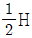
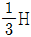
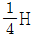
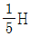
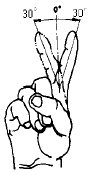
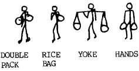

실내건축산업기사 (2002-05-26 기출문제)
1과목: 실내디자인론
1. 디자인용어 중 AIDMA 의 설명 중 틀린 것은?
- A (Attention/주의) : 눈을 끌 수 있는 충분한 매력이 있는가?
- I (Interest/흥미) : 공감을 주는 호소력이 있는가?
- D (Develop/개발) : 개발 가능성이 있는가?
- M (Memory/기억) : 개성적인 인상을 주는가?
(정답률: 75%)

2. 선에 관한 설명 중 적합한 것은?
- 어떤 현상을 규정하거나 한정한다.
- 길이와 위치는 알 수 없다.
- 면의 한계에서 나타나며, 교차는 나타나지 않는다.
- 면적을 분할하며 폭과 부피를 나타낸다.
(정답률: 57%)
3. 질감의 설명 내용으로 옳지 않은 것은?
- 어둡다.
- 거칠다.
- 단단하다.
- 광택이 없다.
(정답률: 71%)
4. 가구에서 일반적인 목재의 접합에 사용하지 않는 것은?
- 접착제
- 못
- 리벳
- 볼트
(정답률: 69%)
5. 실의 기능과 사용 조명과의 관계가 잘못된 것은?
- 현관은 그림자가 없어야 하므로 확산 조명이 좋다.
- 거실은 활기찬 분위기를 연출하기 위해 방향성이 강한 직접조명을 위주로 계획되어야 한다.
- 침실은 부드러운 분위기를 연출하기 위해 간접조명이나 반간접 조명이 좋다.
- 서재는 전반 조명과 국부 조명을 함께 사용하는 것이 기능상 유리하다.
(정답률: 53%)
6. 특수 전시방법중 전시내용이 통일된 형식속에서 규칙 반복되어 나타나는 방법으로, 동일종류의 전시물을 반복하여 전시할 경우 유리한 전시방법은?
- 디오라마 전시
- 파노라마 전시
- 아일랜드 전시
- 하모니카 전시
(정답률: 59%)
7. 실내디자인의 요소인 선에 관한 설명 중 옳지 않은 것은?
- 선은 무수한 점의 흔적으로 평면적이며 실내디자인의 중요한 요소이다.
- 수직선은 공간을 실제보다 더 높아 보이게 한다.
- 수평선은 바닥이나 천장 등의 건물구조에 많이 이용된다.
- 곡선은 단조로움을 없애주고 활동적인 분위기를 연출하는데 효과적이다.
(정답률: 60%)
8. 실내디자인 용어들의 연결이 적당하지 못한 것은?
- 디스플레이 - POP
- 의상실 - 피팅룸(fitting room)
- 부엌 - 배선대
- 미술관 - 데드스페이스(dead space)
(정답률: 72%)
9. 판매 주력 상품을 진열하는데 효율적인 높이는?
- 850 ∼ 1250mm
- 450 ∼ 850mm
- 1300 ∼ 1500mm
- 1500 ∼ 1700mm
(정답률: 80%)
10. OA 에 관한 설명 중 틀린 것은?
- 기기의 사용으로 업무절차가 간소화된다.
- 생산성은 증대하나 개인과 조직의 융통성은 결여된다.
- 개인의 프라이버시가 침해당할 수 있다.
- 업무의 정확성이 개선된다.
(정답률: 41%)
11. 그림의 설명 내용으로 가장 옳지 않은 것은?
 - 균형
- 균형 - 통일
- 통일 - 변화
- 변화 - 점이, 리듬
- 점이, 리듬
(정답률: 55%)
12. 평면도에서 알 수 있는 사항이 아닌 것은?
- 공간의 배치
- 공간의 형태와 크기
- 동선
- 문의 디자인
(정답률: 87%)
13. 디자인의 원리에 관한 설명 중 옳지 못한 것은?
- 스케일은 물체의 크기와 인체의 관계 그리고 물체상호간의 관계를 말한다.
- 균형은 실내분위기에 평형감각과 침착함, 안정감 그리고 중량감을 준다.
- 리듬은 일반적으로 규칙적인 요소들의 반복으로 나타나는 통제된 운동감이다.
- 조화란 1개 이상의 조형요소 또는 부분과 전체 사이에 공통성이 있다.
(정답률: 55%)
14. 평면계획시 고려해야 할 사항과 거리가 먼 것은?
- 동선처리
- 조명분포
- 가구배치
- 출입구의 위치
(정답률: 81%)
15. 공간의 레이아웃 작업이 아닌 것은?
- 공간의 배분계획
- 공간별 재료마감계획
- 동선계획
- 가구배치계획
(정답률: 71%)
16. 실내를 구성하고 있는 다음 요소 중에서 수직적 요소로 볼 수 있는 것은?
- 창
- 기둥
- 바닥
- 천정
(정답률: 87%)
17. 실내디자이너에 관한 설명으로 옳지 않은 것은?
- 주어진 조건에 근거하여 객관적인 기준에 따라 디자인하는 태도를 가져야 한다.
- Human scale에 따른 쾌적한 실내공간 조성을 목표로 한다.
- 지나친 독창성이나 유행적인 대안을 지향한다.
- 단지 보기좋은 형태에만 중점을 두면 기능적인 문제가 발생할 우려가 있다.
(정답률: 80%)
18. 수평선에서 얻어지는 느낌으로 적당한 것은?
- 점층적인 운동감
- 중력에 대한 저항감
- 편안한 운동감
- 편안한 안락감
(정답률: 71%)
19. 식당의 조명계획 방법 중 관련성이 가장 적은 것은?
- 천장면에 부착하는 직부등을 단다.
- 천장에 매달아 늘어뜨린 펜던트형을 사용한다.
- 형광등을 사용하여 분위기를 밝게한다.
- 백열등을 사용한다.
(정답률: 41%)
20. 각 실내공간의 계획시 우선적으로 고려할 사항으로 중요도가 떨어지는 것은?
- 주거공간 - 주부의 동선
- 상업공간 - 상품반입동선
- 업무공간 - 모듈러시스템
- 전시공간 - 조명시스템
(정답률: 48%)
2과목: 색채 및 인간공학
21. 인간의 오류(human error)와 관련된 다음 내용 중 틀린것은?
- 인간이 오류를 범하여도 시스템이 안전하도록 설계하는 fail-safe 개념을 도입하여 작업장을 설계한다.
- 인간이 오류를 범하여도 마치 그렇지 않게 설계하는 fool-proof 개념을 도입하여 작업장을 설계한다.
- 오류를 범하는 작업자는 다시 유사한 오류를 범할 가능성이 높으므로 반드시 작업에서 제거한다.
- 사전에 마련된 점검표(checklist)를 사용하여 위험요인을 점검하고 제거시킨다.
(정답률: 74%)
22. 다음 중 시인성이 가장 좋은 배색 사례는?
- 노랑-파랑
- 빨강-파랑
- 파랑-검정
- 녹색-회색
(정답률: 68%)
23. 조도(lx)에 관한 설명 중 올바른 것은?
- 단위시간에 통과하는 방사에너지의 양
- 일정 방향으로 농출하고 있는 빛의 양
- 일정면에 반사되는 빛의 정도
- 단위면적 또는 단위시간에 받는 빛의 양
(정답률: 62%)
24. 인체 치수의 비율에서 신장을 H 라고 한다면 어깨 폭(너비)의 비율로 가장 가까운 수치는?




(정답률: 61%)
25. 현대 상품의 색채 마케팅 특징은 일반적으로 어디에 많은 비중을 두는가?
- 물리적 기능보다 심리적 기능
- 물리적 기능보다 생리적 기능
- 심리적 기능보다 물리적 기능
- 심리적 기능보다 생리적 기능
(정답률: 89%)
26. 서로 다른 두 색상의 색료를 혼합했을 때, 그 혼합색이 중립의 Grey나 Black에 가까운 색이 되었을 경우 두 색의 관계는?
- 보색
- 단색
- 순색
- 인근색
(정답률: 69%)
27. 색의 온도감에 대한 설명 중 가장 적합한 것은?
- 장파장의 색이 따뜻하고 단파장의 색이 차갑다.
- 명도가 낮은 검정계통은 좀 차갑게 느껴진다.
- 같은 색이라도 광택이 있으면 더 따뜻하게 느껴진다.
- 저명도의 색은 한난의 감정이 없다.
(정답률: 51%)
28. 혀의 안쪽에서 잘 느끼는 미각(味覺)은?
- 단맛
- 신맛
- 짠맛
- 쓴맛
(정답률: 41%)
29. 다음 중 눈의 피로를 줄이고 편안한 느낌을 주는 색은?
- 황색
- 녹색
- 적색
- 흑색
(정답률: 85%)
30. 먼셀 표색계에서 정의한 5개의 기본 색상 중에 해당되지 않는 것은?
- 빨강
- 보라
- 파랑
- 주황
(정답률: 71%)
31. 다음 중 입력자극으로서 청각장치의 사용이 특히 유리한 것은?
- 전언(message)이 복잡하다.
- 전언이 길다.
- 전언이 공간적 위치를 다룬다.
- 전언이 후에 다시 참조되지 않는다.
(정답률: 43%)
32. 오스트발트 색채조화론에 의한 조화법칙 중 틀린 것은?
- 색상이 동일하고 색의 기호가 다르면 두 색은 조화하지 않는다. (예 : 5ge-5ne)
- 색상이 달라도 색의 기호가 동일한 두 색은 조화 한다. (예 : 5ne-8ne)
- 색의 기호 중 앞의 문자와 동일한 두 색은 조화한다. (예 : ga-ge)
- 색의 기호 중 앞의 문자와 뒤의 문자가 같은 색은 조화하지 않는다. (예 : la-pl)
(정답률: 51%)
33. 다음 그림에서 가동역을 표현한 내용이 맞는 것은?

- 굴곡
- 회선
- 신전
- 내전과 외전
(정답률: 74%)
34. 다음 그림 중 같은 무게의 짐을 운반할 때 가장 에너지가 적게 소모되는 방법은?

- Double pack
- Rice bag
- Yoke
- Hands
(정답률: 56%)
35. 다음 중 경보하는 방법으로 가장 적절하지 않은 것은?
- 여성의 목소리는 흔하지 않는 환경에서 주의를 환기시키는데 효과적이다.
- 음과 빛을 혼합하여 알린다.
- 급박한 상황이므로 취해야할 조처보다는 비상사태임을 알리기에 충분하다.
- 사태의 단계에 따라 서로 다른 경보를 제시한다.
(정답률: 54%)
36. 문.스펜서의 조화론 설명이 잘못된 것은?
- 100색상을 기준으로 보색 색상간의 차는 50 이다.
- 일반적으로 먼셀 표색계에 의해 설명 된다.
- 감성적인 조화론을 과학적, 정량적으로 취급한 특성이 있다.
- 제1부조화란 동일한 색끼리의 부조화이다.
(정답률: 35%)
37. 색채조절의 효과로서 기대되는 것과 가장 거리가 먼 것은?
- 생산의 증진
- 결근의 감소
- 피로의 경감
- 재해율의 증가
(정답률: 68%)
38. 인접된 주위의 색과 가깝게 보이는 현상은?
- 대비
- 동화
- 잔상
- 항상성
(정답률: 74%)
39. 작업장의 설계에 관한 일반적인 고려사항이 잘못된 것은?
- 자연스러운 자세를 취할 수 있도록 한다.
- 지구력이 조화될 수 있도록 설계한다.
- 가능한 신체지탱 보조물을 제거한다.
- 피로를 극소화 하도록 설계한다.
(정답률: 78%)
40. 다음 중 빛을 지각하지 못하는 경우는?
- 입자에 의해 산란될 때
- 물체의 직접반사에 의해
- 물체를 투과할 때
- 물체에 흡수될때
(정답률: 59%)
3과목: 건축재료
41. 목재가 부패하여 파괴기에 들어가면 색의 변화가 나타나는데 활엽수재의 부패시 주로 나타나는 색은?
- 적색
- 백색
- 청색
- 황갈색
(정답률: 32%)
42. 시멘트기와의 원료 배합비(시멘트:모래)로 가장 적당한 것은?
- 중량 배합비 1 : 2
- 용적 배합비 1 : 2
- 용적 배합비 1 : 3
- 중량 배합비 1 : 3
(정답률: 42%)
43. 석재의 시험 중에서 거의 실시되지 않는 시험은?
- 비중 시험
- 흡수율 시험
- 압축강도 시험
- 인장강도 시험
(정답률: 32%)
44. 돌로마이트플라스터가 경화하기 위해 필요한 것은?
- 이산화탄소(CO2)
- 물(H2O)
- 산소(O2)
- 수소(H)
(정답률: 44%)
45. 건축용 유리 중 지하실 또는 지붕의 채광용으로 이용되며 데크유리로도 불리는 것은?
- 유리타일
- 열반사유리
- 기포유리
- 프리즘유리
(정답률: 63%)
46. 물시멘트비를 65%로 콘크리트 1m3를 만드는데 필요한 물의 양으로 적당한 것은? (단, 콘크리트 1m3 당 시멘트 8포대(1포대 = 40㎏)임)
- 0.1m3
- 0.2m3
- 0.3m3
- 0.4m3
(정답률: 25%)
47. 콘크리트 벽면에 주로 사용하는 도장재료는?
- 오일페인트
- 합성수지 에말죤페인트
- 락카에나멜
- 에나멜페인트
(정답률: 41%)
48. 페인트에서 연단(鉛丹), 연백(鉛白) 등을 포함시킨 도료의 용도는?
- 방수
- 방청
- 내열
- 방화
(정답률: 45%)
49. 인조석바름의 반죽에 필요한 재료를 옳게 열거한 것은?
- 백시멘트, 종석, 강모래, 해초풀, 물
- 백시멘트, 종석, 안료, 돌가루, 물
- 백시멘트, 강자갈, 강모래, 안료, 물
- 백시멘트, 강자갈, 해초풀, 안료, 물
(정답률: 46%)
50. 벽돌에 관한 기술 중 올바른 것은?
- 과소벽돌은 질이 견고하고 흡수율이 낮아 구조용으로 적당하다.
- 건축용 내화벽돌의 내화도는 800℃ 이상이어야 한다.
- 표준형벽돌의 치수는 190 × 90 × 57mm이다.
- 포도벽돌은 주로 건물 외벽의 치장용으로 사용된다.
(정답률: 71%)
51. A.E. 콘크리트에 관한 기술 중 틀린 것은?
- 콘크리트 중에 연행되는 공기량은 3 ~ 5%가 표준이다
- 공기량 1% 증가에 따른 압축강도 저하율은 5% 정도이다.
- 굵은골재의 최대치수가 클수록 공기량이 증가한다.
- 시공시 온도가 낮을수록 공기량이 많아진다.
(정답률: 48%)
52. 회반죽에 여물을 넣는 이유 중 옳은 것은?
- 균열을 방지하기 위함
- 강도를 높이기 위함
- 경화속도를 높이기 위함
- 경도를 높이기 위함
(정답률: 63%)
53. 피아노선은 어디에 사용하는 재료인가?
- 레디믹스트콘크리트
- 프리스트레스트콘크리트
- 경량콘크리트
- A.E콘크리트
(정답률: 41%)
54. 아마인유의 산화물에 수지, 고무질물질, 안료 등을 섞어 마포 같은데 발라 두꺼운 종이 모양으로 압연 성형한 것은?
- 리놀륨 타일
- 고무 타일
- 아스팔트 타일
- 비닐 타일
(정답률: 36%)
55. 목재의 강도에 관한 설명 중 옳지 않은 것은?
- 비중이 크면 압축강도도 크다.
- 목재의 휨강도는 전단강도보다 크다.
- 목재의 함수율이 크면 클수록 압축강도는 증가한다.
- 목재의 강도는 섬유방향에 평행하게 가한것이 가장 강하다.
(정답률: 49%)
56. 염화비닐수지의 용도로 적절치 않은 것은?
- 파이프
- 타일
- 도료
- 유리 대용품
(정답률: 35%)
57. 강(steel)에 대한 설명 중 틀리는 것은?
- 강은 탄소 함유량이 일정한도 넘으면 인장강도가 저하된다.
- 강은 탄소량이 0.04 ~ 1.7% 정도 함유된 철을 말한다
- 강의 인장강도는 200℃정도 일때가 상온일 때 보다 약간 작다.
- 주철의 인장강도는 강의 인장강도보다 작다.
(정답률: 40%)
58. 시멘트블록에 대한 설명 중 옳지 않은 것은?
- 구멍을 제외한 실제 단면적에 가해진 하중으로 압축강도를 구한다.
- 길이,두께 치수의 허용오차는 ± 2mm 정도이다.
- 1급의 압축강도는 80kg/cm2 이상이다
- 품질판정은 압축강도,흡수율이 중요하다.
(정답률: 25%)
59. 재료가 외력을 받을 때 변형을 적게 하려는 성질을 무엇이라고 하는가?
- 가소성
- 강성
- 인성
- 좌굴
(정답률: 46%)
60. 수입 수종 중 재질이 단단하고 고급가구재로 많이 쓰이는 것은?
- 삼나무(杉 : sugi)
- 미송(美松)
- 라왕(羅王 : lauan)
- 흑단(黑檀)
(정답률: 29%)
4과목: 건축일반
61. 관람집회시설의 용도에 쓰이는 관람석으로 부터 밖으로의 출구는 유효너비를 얼마 이상으로 하는가?
- 1.2m
- 1.5m
- 1.8m
- 2.1m
(정답률: 61%)
62. 의자, 소파, 테이블 등의 가구에서 사용되는 짐승다리 모양의 지지대가 역사상 최초로 사용된 시기는?
- B.C. 2000년 이전
- 로마
- 중세기
- 16세기 이후
(정답률: 27%)
63. 하이테크(High-Tech)를 중심으로 하는 건축과 관계가 적은 것은?
- 시드니 오페라 하우스
- 로이드 보험회사 사옥
- 홍콩 상하이 은행
- 퐁피두 센터
(정답률: 45%)
64. 철근콘크리트 기둥에 관한 설명 중 옳지 않은 것은?
- 기둥의 최소 단면적은 600cm2 이상으로 한다.
- 사각형 기둥은 주근을 4개이상 배근한다.
- 띠철근은 수평력에 대한 전단보강의 작용을 한다.
- 띠철근의 간격은 최대 20cm 이하로 해야 한다.
(정답률: 32%)
65. 특수장소에 사용하여야 하는 방염성능 재료의 기준에 관한 설명 중 틀린 것은?
- 불꽃에의해 완전히 녹아질 때까지 불꽃의 접촉 회수는 5회 이상
- 탄화한 면적은 50cm2 이내
- 탄화한 길이는 20cm 이내
- 버어너의 불꽃을 제거한 때부터 불꽃을 올리지 아니하고 연소하는 상태가 그칠 때까지 시간은 30초 이내
(정답률: 56%)
66. 고딕건축과 관계가 없는 것은?
- flying buttress(비량)
- pointed arch(뾰족아치)
- minaret(미나렛)
- Rose Window(장미창)
(정답률: 51%)
67. 주요구조부가 내화구조인 학교의 교실에서 피난층에 통하는 직통계단까지의 보행거리는?
- 30m 이하
- 40m 이하
- 50m 이하
- 60m 이하
(정답률: 29%)
68. 벽돌조에 대한 설명 중 옳지 않은 것은?
- 내력벽의 길이는 10m를 넘을 수 없다.
- 내력벽으로 둘러싸인 부분의 바닥면적은 80m2를 넘을 수 없다.
- 대린벽으로 구획된 각 벽에 있어서 개구부 폭의 합계는 그 벽길이의 1/2 이하로 한다.
- 개구부와 개구부의 상하 수직거리는 90cm 이상으로 한다.
(정답률: 41%)
69. 벽돌쌓기법 중 가장 튼튼한 쌓기법은?
- 미식쌓기
- 영식쌓기
- 화란식쌓기
- 불식쌓기
(정답률: 54%)
70. 철골조 기둥을 내화구조로 하기 위한 콘크리트의 최소 피복두께로 옳은 것은?
- 2cm 이상
- 3cm 이상
- 4cm 이상
- 5cm 이상
(정답률: 23%)
71. 목구조 접합철물중 듀벨(Dubel)은 어떠한 응력에 작용시키는가?
- 휨모멘트
- 전단력
- 인장력
- 부착력
(정답률: 54%)
72. 철근콘크리트 보에 관한 설명 중 옳지 않은 것은?
- 주요한 보는 복근으로 배근한다.
- 주근은 직경 D13 이상으로 한다.
- 스터럽(늑근)은 중앙부 보다 양단부에 많이 배근된다.
- 보의 양단부는 하부에 주근을 많이 배근한다.
(정답률: 36%)
73. 서양 건축양식의 발달순서를 나열한 것 중 옳은 것은?
- 그리스 - 로마 - 초기기독교 - 로마네스크 - 고딕 - 르네상스 - 바로크
- 그리스 - 로마 - 초기기독교 - 고딕 - 르네상스 - 바로크 - 로마네스크
- 그리스 - 로마 - 로마네스크 - 초기기독교 - 고딕 - 르네상스 - 바로크
- 로마 - 그리스 - 초기기독교 - 로마네스크 - 고딕 - 바로크 - 르네상스
(정답률: 54%)
74. 건축물의 피난에 관한 규정 중 틀린 사항은?
- 피난층이란 직접 지상에 통하는 출입구가 있는 층
- 피난계단은 직통계단이라야 한다.
- 보행거리란 거실의 각 부분으로부터 피난층에 통하는 직통계단까지 거리를 말한다.
- 피난층은 한 건물에 1개 뿐이다.
(정답률: 67%)
75. 철근콘크리트 바닥판의 두께가 12cm 일때 보와 보로 구획된 1개 판의 면적은 얼마 이내로 하는 것이 이상적인가?
- 20m2
- 30m2
- 45m2
- 60m2
(정답률: 46%)
76. 조적조에서 벽량(壁量)이란?
- 내력벽의 길이와 바닥면적과의 비
- 각층의 개구부면적을 뺀 벽의 면적
- 건물면적과 벽면적과의 비
- 각층의 개구부면적과 벽면적과의 비
(정답률: 35%)
77. 건축법의 용어 정의상 건축에 해당되지 않는 것은?
- 신축
- 이전
- 대수선
- 증축
(정답률: 38%)
78. 탈 근대건축의 공통적 특징은?
- 건축의 언어성을 강조한다.
- 절충주의 건축을 반대한다.
- 기능을 무시한다.
- 순수한 형태를 추구한다.
(정답률: 25%)
79. 비상콘센트 설비를 설치 하여야 할 소방대상물은?
- 6층 이상의 층
- 9층 이상의 층
- 11층 이상의 층
- 15층 이상의 층
(정답률: 50%)
80. 소방본부장 또는 소방서장은 건축허가의 동의 요구를 받을때 동의기간은 얼마 이내인가?
- 3일
- 5일
- 6일
- 8일
(정답률: 35%)